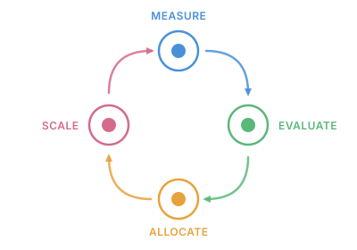

"It doesn't matter how beautiful your [pitch] is, it doesn't matter how [confident] you are. If it doesn't agree with [the data], it's wrong."
Organizations invest in dozens of initiatives each year, but without shared measurement infrastructure, leadership is flying blind. Every team produces its own estimate — different assumptions, different baselines, different definitions of success. There's no systematic way to distinguish rigorous evidence from back-of-envelope projections, so budget flows on advocacy and intuition.
The Impact Engine fixes that. The value is in the system, not the analysis — measurement repeatable, evidence scored, allocation anchored. The learning loop is a system property: it disappears if any stage is manual or disconnected. A team doing this work creates a dependency. A system doing this work creates an asset.
Decision Loop

Start with a cohort of candidate initiatives and run small-scale pilots. Measure the impact of each pilot. Evaluate how much to trust each estimate based on methodological rigor and remaining uncertainty. Allocate budget to the most promising initiatives through constrained portfolio optimization. Scale the winners, monitor their performance, and feed the learnings back into the next cycle.
The Impact Engine — Orchestrator
runs this loop from a single config file. It names the initiatives under
consideration, sets the total budget, and picks the allocation rule. Each
initiative carries a measure_config — a YAML file that specifies
the impact measurement approach tailored to that initiative.
ALLOCATE:
budget: 100000
rule: minimax_regret
INITIATIVES:
- initiative_id: product-desc-enhancement
cost_to_scale: 15000
measure_config: configs/product-desc-enhancement.yaml
- initiative_id: checkout-flow-optimization
cost_to_scale: 25000
measure_config: configs/checkout-flow-optimization.yaml
Passing the config to run_pipeline() executes all four stages in
sequence — pilot measurement, evidence scoring, portfolio selection, and scaled
re-measurement — and returns structured results for each.
from impact_engine_orchestrator import run_pipeline
result = run_pipeline("pipeline.yaml")Walk through a full pipeline run →
Source Codes
Each package is an independent library with its own test suite and CI pipeline — use one to solve a specific problem, or wire all three together through the orchestrator to run a full decision loop in a single call. Every component follows the same interface contract, so adopting one today doesn't lock you out of composing the full pipeline tomorrow.
Measure
Causal impact measurement
Evaluate
Evidence quality scoring
Allocate
Constrained portfolio optimization